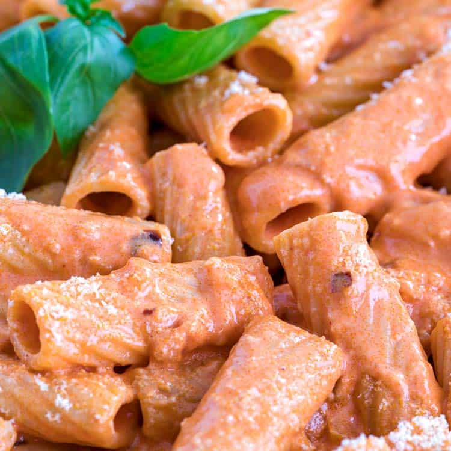

Vodka Sauce with Penne Pasta

Growing up with an Italian mother, pasta and sauce was always a consistent
staple in our house but in my mind there was always one pasta dish to rule
them all: Vodka Sauce with Penne Pasta. Vodka sauce is very rich and heavy. It can
be spicy, fragrant, garlic-y, or all of them at once, it can be whatever you
want you just have to change the ratio of the ingredients to your liking! Since it's a heavy sauce it pairs very well with Penne noodles as well.
It's a simple and quick recipe. All you need is a few ingredients and a big
appetite!
Ingredients
- One shallot
- Two cloves of chopped garlic
- Half teaspoon of crushed red pepper flakes
- Three tablespoons of butter
- Half cup of tomato paste
- Two tablespoons of vodka
- Kosher salt
- One pound of Penne Pasta
- Half cup of heavy cream
- Half cup of freshly grated Parmesan
- Basil
Steps
- Melt butter in a skillet over medium heat. Add shallot and garlic. Cook
for 4 to 5 minutes or until softened.
- Add tomato pasteand red pepper flakes and cook, stirring frequently
until paste has coated shallots and garlic and it begins to darken,
5 minutes.
- Add vodka and stir to incorporate and Scrape brown bits from the
bottom of the pan. Turn off heat.
- Boil pasta and reserve 2 cups of pasta water before draining.
- Return sauce to medium heat and add 1/4 cup of pasta water and heavy
cream, stir to combine.
- Add half of your Parmesan and stir until melted. Add cooked pasted.
Fold in the rest of your Parmesan. Add a tablespoon of pasta water at
a time. If your sauce is looking dry add salt and top with basil leaves
then serve!